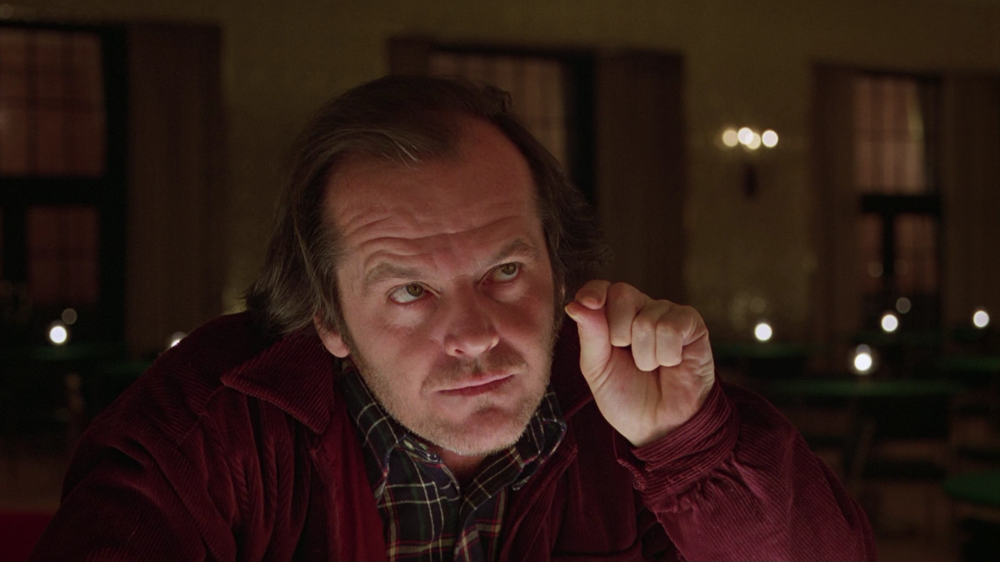
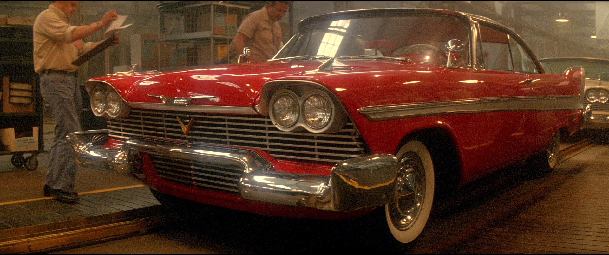

Джек Торренс
Один из запоминающихся персонажей времен 80х годов - это главный герой и антагонист романа «Сияние», адаптации Стэнли Кубрика 1980 года и минисериала Мика Гарриса 1997 года. Ранее работавший учителем Джек оставил эту работу и занялся карьерой писателя. Чтобы получить возможность закончить свою книгу, Джек устраивается смотрителем в отдаленный отель, закрытый на зиму для посетителей, и переселяется туда с семьей. Злые духи, населяющие отель, начинают преследовать Джека, и в итоге сводят его с ума, отчего тот решает убить свою семью, жену Венди и сына Дэнни. Обладающий телепатией Дэнни пытается защитить отца, но ему это не удается, и они с матерью сбегают. Рассудок возвращается к Джеку, но слишком поздно — устроенный по его вине взрыв уничтожает и отель, и его самого. В одноименном фильме, снятом на основе романа, Джек до смерти замерзает после попыток поймать Дэнни в лабиринте.
Кристина
Еще один запоминающийся культовый персонаж 80х годов - машина "Кристина". Решив передохнуть от серьезного пугающего кино, режиссер Джон Карпентер увлекся ироничной историей, также не лишенной элемента будоражащего нервы саспенса. Главным помощником в создании ленты для постановщика стал мастер ужаса Стивен Кинг. Непопулярный среди сверстников тинейджер увлкся идеей отреставрировать списанный в утиль Плимут 1958 года выпуска. Никто вокруг не понял внезапной одержимости Арни Каннингэма: он день и ночь готов был проводить в гараже, полируя бока своей красавицы и в десятый раз любовно перебирая двигатель. Вскоре роскошное красное авто, которое новый владелец назвал Кристиной, было готово шуршать гравием дорог. Странная связь машины и хозяина крепла. Оказывается, под капотом скрывалась адская мощь, готовая вырваться на свободу и наказать всех, кто только подумать посмел плохо о резко возмужавшем и похорошевшем Арни. Если бы Арни знал, что случилось с теми, кто прежде сидел за рулем этой красавицы, все могло случиться совсем иначе.
